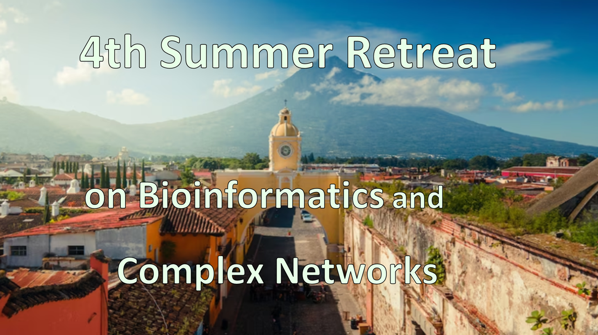
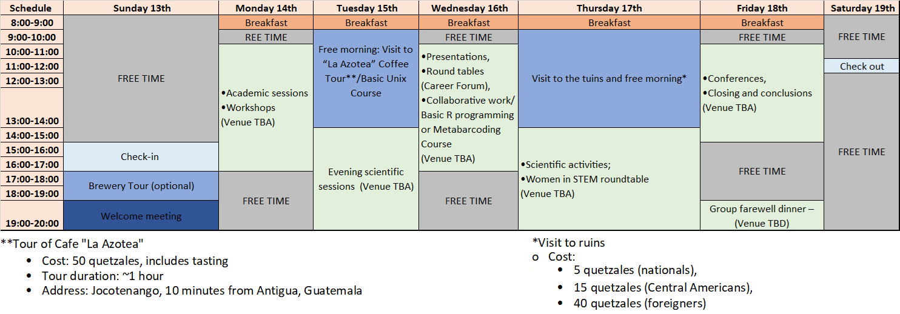
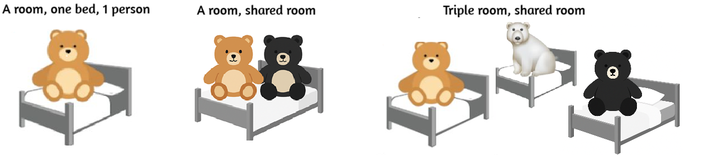
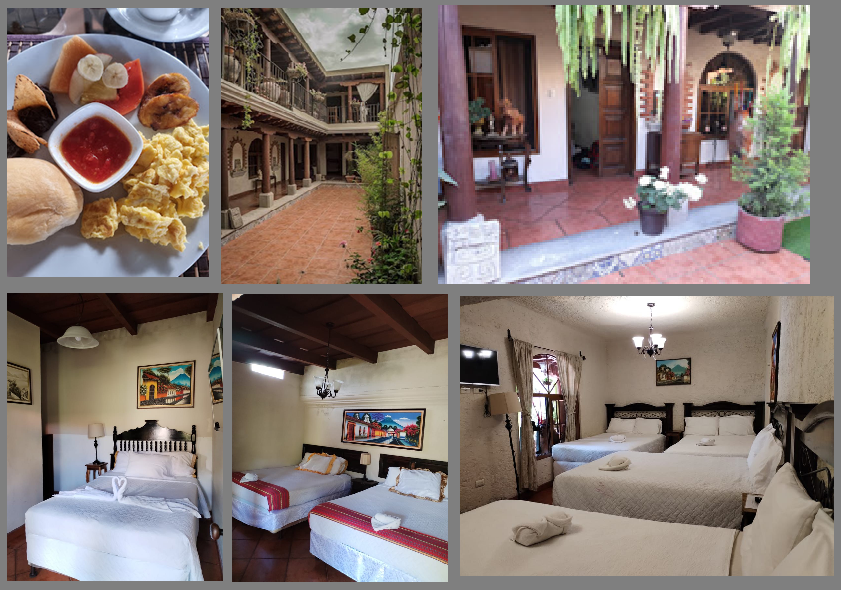

We are thrilled to announce that this year's event will take place from July 13th to 19th, 2025. Join us at the pictures Colegio Mayor Santo Tomás de Aquino and Colegio La Salle, located in the beautiful and magical colonial city of Antigua, Guatemala.
The 4th Summer Retreat on Bioinformatics and Complex Networks offers a unique, one-week experience filled with bioinformatics workshops, insightful talks, and extensive networking opportunities. The retreat focuses on a wide array of topics, including biological, computational, and mathematical fields, fostering a multidisciplinary dialogue.
This year the event is organized by the Bioinformatics and Complex Networks Lab at CINVESTAV Irapuato, Guanajuato; the Centro Universitario de Zacapa; and the Universidad de San Carlos de Guatemala at Guatemala.
Take a glimpse into our previous retreats and stay updated by following us on X: @BioinfoComplexN
The event will take place at Colegio Mayor Santo Tomás de Aquino, 1a Avenida Nte 23, Antigua, Guatemala and Colegio La Salle, 26 Avenida Norte 4a, Antigua, Guatemala. This beautiful colonial city enchants visitors with its monuments, museums, cathedrals, handicrafts, and natural beauties.

While it is not mandatory, it is highly encouraged for every participant to present their scientific projects. This event offers a unique opportunity to share your expertise and connect with like-minded individuals who are interested in your research areas. Engaging in these discussions can enhance your network and potentially lead to collaborative opportunities. Importantly, there is NO fee to attend/participate in any of the workshops or talks, or other sessions at the event, making it an even more accessible opportunity for all attendees.
Participants are asked to provide a meaningful (preliminary) title during registration to facilitate the scheduling of talk sessions. To support the presentations, we will provide a video projector equipped with VGA and HDMI ports, as well as a laser pointer.
Preliminary schedule:
The conference fee includes accommodation and coffee break at the Hotel Mansion del Rey, 4 Avenida Norte 24, Antigua Guatemala, Guatemala, ensuring attendees have a comfortable stay while enjoying all events. To make a reservation at the official hotel, please email us at: reservacionhoteloficial@gmail.com.
| Room capacity | Price per day p/p (Quetzales) | Whole week p/p (Quetzales) |
|---|---|---|
| A room, one bed, 1 person | Q376 per night | Q2256 |
| Double room, one bed, 2 people | Q200 per night | Q1200 |
| Triple room, 3 beds, 3 people | Q200 per night | Q1200 |
| Quadruple room, 2 bed, 4 people | Q200 per night | Q1200 |
| Sextuple Room, 3 beds, 6 people | Q200 per night | Q1200 |
| Sextuple Room, 6 beds, 6 people | Q200 per night | Q1200 |
| Octople Room, 4 beds, 8 people | Q200 per night | Q1200 |
Price may vary
However, we are here to assist you with any instructions or guidance you may need upon your arrival at the hotel. Please do not hesitate to reach out to us for assistance.
Your family is welcome to join us in Antigua Guatemala!
We recognize that family needs can vary, especially depending on the number of children involved. If it would be more convenient for you, we are fully prepared to arrange separate accommodations for families and individuals attending the sessions. If this applies to you, please notify the organizing committee, and we will provide personalized assistance to ensure comfort and satisfaction for you and your family during the event.
Please fill out this form to register your attendance.
Deadline for registration: June 15th, 2025.